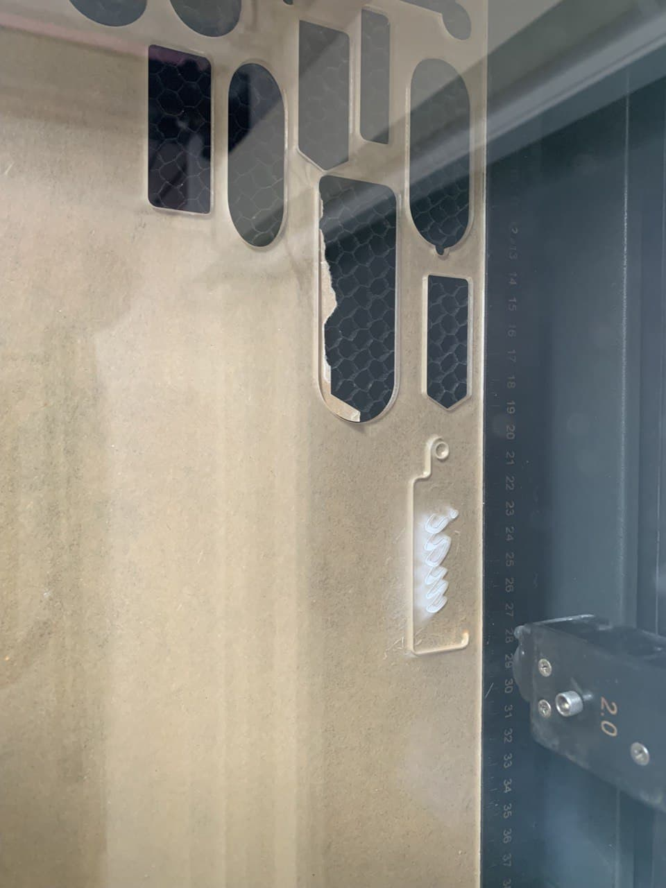
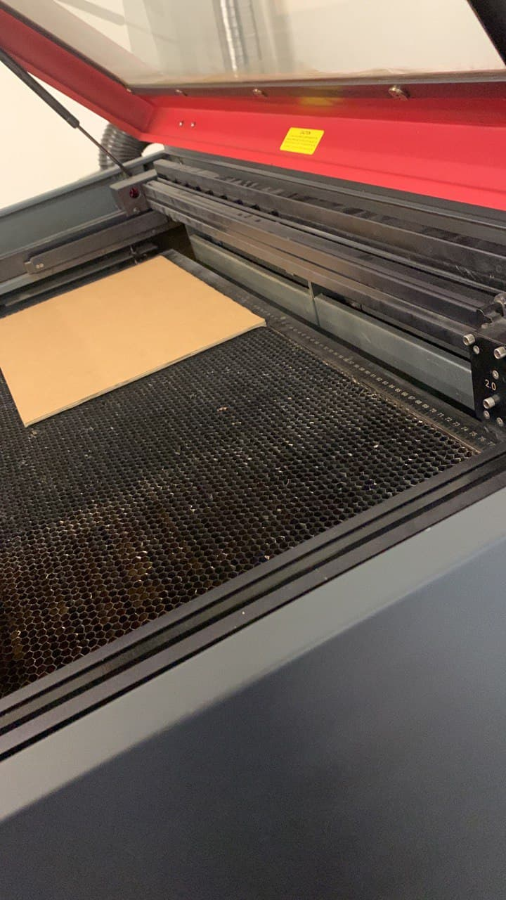
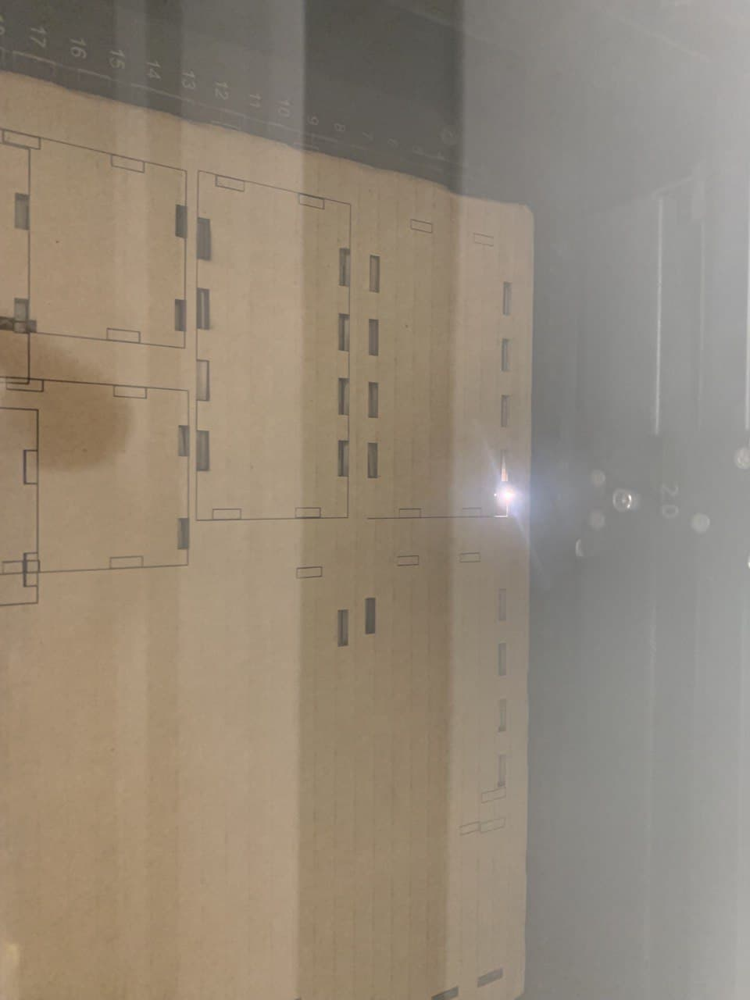
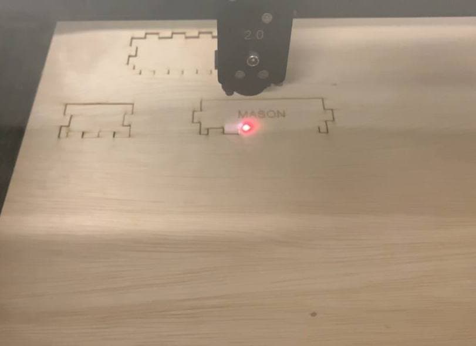

Keychain
First lazer cutting activity was making a keychain by lazer cutting and engraving an acrylic board
From the image you can see that the clouded area is actually the engraving part of the keychain, where the outerline is then the part where it is cut through fully.
Music Box
Second lazer cutting activity was making a music box by lazer cutting and engraving on a piece of 3mm wood.
 Before cutting out the actual music box, I personally believe that having a practice cut is necessary, hence i use cardboard instead wood. From the practice cut i realise that the intersactions were design wrongly
After redesigning the intersactions, only then wood is cut to make the music box.